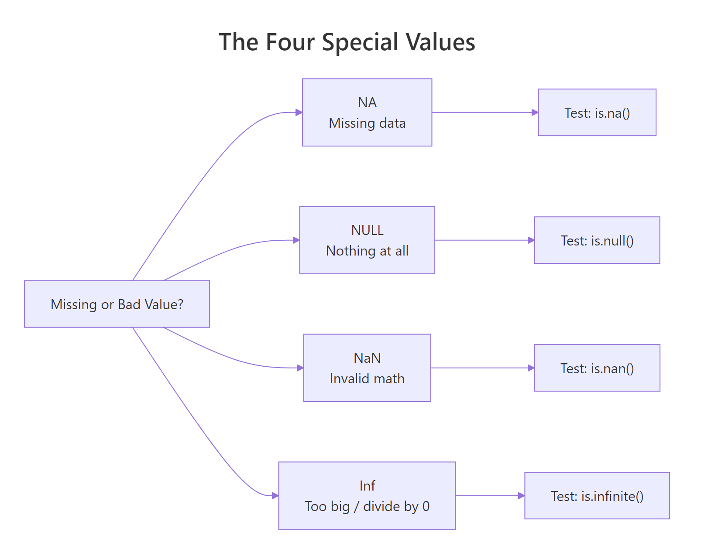
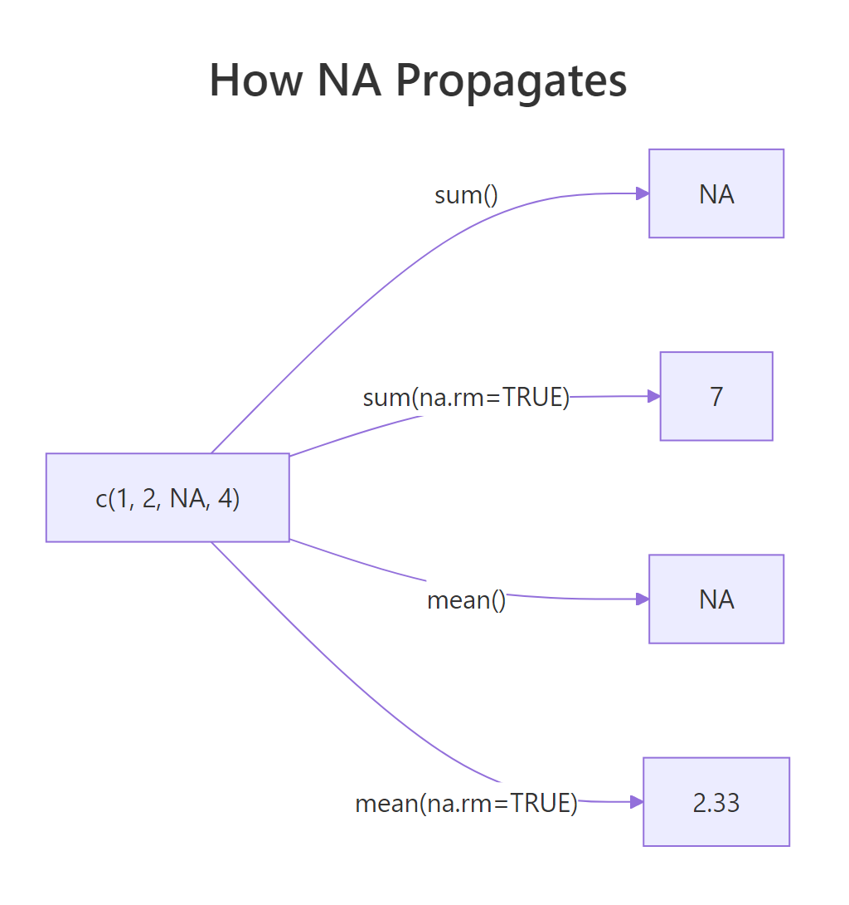
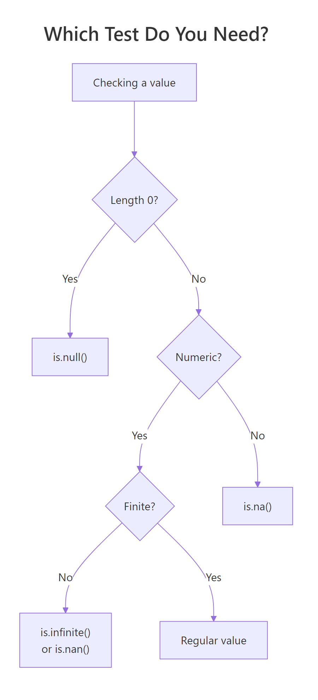

R's Four Special Values: NA, NULL, NaN, Inf — What Each One Actually Means
R has four special values that look similar but behave very differently. NA means "missing data", NULL means "nothing at all", NaN means "invalid math" (like 0/0), and Inf means "too big to represent" (like 1/0). Each needs its own test function and its own handling strategy.
What does each special value actually mean?
Every R user hits these four eventually, usually the hard way — a mean() that silently returns NA, a length() of 0 when they expected 1, or a model that explodes on Inf. The fix starts with understanding what each value represents.
Notice y (NULL) vanished from the combined vector — c() just drops it. That's your first clue that NULL behaves differently from the others: it's not a value at all, it's the absence of one.

Figure 1: Each special value answers a different question about a result. Use the right test function for each.
NA takes up a slot in a vector, NULL doesn't.How do you test for NA vs NULL vs NaN vs Inf safely?
Each special value has its own test — and using the wrong one silently gives you the wrong answer. The four tests you need are is.na(), is.null(), is.nan(), and is.infinite(). Each returns TRUE only for its matching value.
Two gotchas in those four lines. First: is.na() returns TRUE for both NA and NaN. That's by design — R treats NaN as a special kind of NA. If you only care about missing data, is.na() is fine. If you need to distinguish, use is.nan(). Second: is.infinite() matches both Inf and -Inf.
== — these values break equality. NA == NA returns NA, not TRUE. NaN == NaN returns NA too. Always use is.na(), is.nan(), etc.NULL is different — it's not a value in a vector, it's an object of length 0. Test it with is.null():
Only NULL itself is NULL — an empty list or empty vector is not NULL, they're just empty.
Try it: Create ex_vals <- c(1, NA, NaN, Inf, -Inf, 2) and write one line using is.finite() to keep only the "real" numbers.
Click to reveal solution
is.finite() is the Swiss-army test that returns FALSE for NA, NaN, Inf, and -Inf all at once — exactly the four values you'd want to exclude when you ask "give me just the real, usable numbers." Chaining three separate tests (!is.na(x) & !is.nan(x) & !is.infinite(x)) works but is noisier and slower.
Why does NA poison calculations — and how do you stop it?
Any arithmetic touching NA returns NA. This is deliberate: R refuses to guess what a missing value "should" be. So sum(), mean(), sd(), max() on a vector with even one NA return NA — until you tell them to skip it with na.rm = TRUE.

Figure 2: Without na.rm, one NA poisons the whole result. With na.rm = TRUE, it's dropped before computing.
This isn't a bug — it's R protecting you from silently wrong answers. If you mean() a column that has missing values, the honest answer is "I can't compute this without telling you what to do about the NAs." Always pass na.rm = TRUE consciously, not reflexively.
anyNA(x) instead of any(is.na(x)) — it's faster on large vectors and bails out at the first NA it finds.Logical operations also propagate NA — but only when the answer genuinely depends on the unknown:
R is doing three-valued logic here, and it's smarter than most languages — if the answer is determined regardless of the missing value, R returns it without complaint.
How does R's type-specific NA (NA_integer_, NA_character_) work?
NA has a type. By default it's logical, but R provides typed variants — NA_integer_, NA_real_, NA_character_, NA_complex_ — for when you need missing values of a specific type. You'll hit this most often when initializing a result vector.
Most of the time R coerces for you, so plain NA works fine. But in pre-allocated result vectors or tidyverse code that checks types strictly, the right typed NA prevents surprises.
If you'd used rep(NA, 5) you'd have a logical vector and assigning 3.14 into it would trigger a silent type coercion. Typed NAs are the cleanest defensive pattern.
Try it: Pre-allocate ex_names as a length-3 character vector of NA_character_, then assign "Ada" to position 1.
Click to reveal solution
Using NA_character_ keeps the vector's type as "character" from the start, so assigning "Ada" into position 1 is a pure type-preserving operation. If you'd started with rep(NA, 3) you'd have a logical vector and the assignment would silently coerce the whole thing to character — harmless in a one-liner but a source of surprising bugs in pre-allocation loops where the type is supposed to stay fixed.
Where does NULL belong (and where it doesn't)?
NULL represents absence, not missingness. You use it to say "this argument wasn't provided", "this list slot is empty", or "remove this element." It has length 0 and no type.
That's the cleanest use of NULL — a default that means "figure it out for me." Checking is.null(label) tells you whether the caller passed anything.
NULL is also how you remove elements from a list:
Assigning NULL to a list element deletes it entirely. Same trick with data frame columns: df$old_col <- NULL drops the column.
NULL inside a regular vector expecting a "missing" marker — use NA for that. c(1, NULL, 3) gives you c(1, 3), not c(1, NA, 3).How do Inf and NaN appear in real computations?
Inf (infinity) and NaN (not-a-number) come from math operations that don't have finite answers. The classic sources: dividing by zero, taking log(0), or computing 0/0.
Each one is telling you something different. Inf says "the answer is larger than a finite double can store." NaN says "this operation has no meaningful answer at all." R uses IEEE 754 floating point, so these are the standard results your CPU would produce in any language.
They show up in real code most often after a log() transform or a rate calculation:
One zero denominator, one Inf, and now any downstream mean() or sum() is broken. You need to decide what Inf means in your context — a missing rate? A capped value? Then handle it explicitly.
Try it: Given ex_x <- c(1, 2, 0, 4, 0, 6), compute 1 / ex_x, then replace any Inf with NA_real_.
Click to reveal solution
Dividing by zero produces Inf (positive, since both operands are positive), so positions 3 and 5 become Inf. is.infinite() catches both Inf and -Inf in one test — exactly what you want here. Assigning NA_real_ (not plain NA) keeps the vector's type as double; plain NA is logical and would force an unnecessary coercion step.
How do you clean special values before modeling?
Most statistical and machine-learning functions in R refuse to work with NA, NaN, or Inf. Your data prep checklist is: detect, decide, replace or drop. There's no single right answer — dropping rows, imputing the mean, or replacing with zero all have trade-offs.
Strategy 1: Drop any row with problems.
is.finite() is the Swiss-army test here — it returns FALSE for NA, NaN, Inf, and -Inf in one shot. Much cleaner than chaining three separate tests.
Strategy 2: Replace with a sentinel.
Imputing with mean/median preserves sample size at the cost of some variance. For the rate column we only computed the median over finite values — otherwise NaN and Inf would corrupt the replacement.
Try it: Given ex_df with a score column c(1, NA, 3, Inf, 5), keep only rows where score is finite. Use is.finite().
Click to reveal solution
is.finite(ex_df$score) returns c(TRUE, FALSE, TRUE, FALSE, TRUE), and using it to subset rows drops the NA at position 2 and the Inf at position 4 in one shot. The row numbers in the output (1, 3, 5) are preserved from the original data frame — a useful trace of which observations survived, though you can reset them with rownames(ex_df_clean) <- NULL if you need a clean sequence.
Practice Exercises
Exercise 1: Classify every value
Write classify(x) that takes a numeric vector and returns a character vector labelling each element as "regular", "NA", "NaN", "Inf", or "-Inf". Use is.na(), is.nan(), and is.infinite() in the right order.
Show solution
Order matters: test is.nan() before is.na(), because is.na() is TRUE for NaN too.
Exercise 2: Safe division
Write safe_div(a, b, replace = NA_real_) that divides two vectors element-wise. Wherever the result would be Inf, -Inf, or NaN, substitute replace.
Show solution
Exercise 3: Missing-value report
Write na_report(df) that returns a data frame listing each column and its count of NAs (treat NaN and Inf as NA too — so use is.finite() on numeric columns).
Show solution
Complete Example: Cleaning a Messy Dataset
Here's the full workflow on a toy dataset with every kind of problem in it.
Three kinds of problems in one column: NA from source data, NaN from 0/0, and potentially Inf if cost were non-zero with a zero denominator elsewhere. is.finite() handles them all in one call:
We reduced 8 rows to 4, but the mean margin is now trustworthy. The has_issue flag is left in raw so you can report how many rows were dropped — a habit worth keeping.
Summary

Figure 3: Pick the right test by asking what you're checking. If you're not sure, start with is.finite() — it handles NA, NaN, and Inf in one call.
| Value | Means | Test with | Example source |
|---|---|---|---|
NA |
Missing data (unknown) | is.na() |
Missing from input, na.rm = FALSE on a gap |
NULL |
Absence — length 0 | is.null() |
Unset argument, removed list element |
NaN |
Invalid math | is.nan() |
0/0, log(-1), Inf - Inf |
Inf / -Inf |
Too big to represent | is.infinite() |
1/0, log(0), overflow |
| Any of the above | "Not a regular number" | !is.finite() |
One-shot check for numerics |
Three rules worth memorizing:
- Use
is.finite()when you want "a regular, usable number" — it filters NA, NaN, and Inf in one call. - Never compare special values with
==— comparisons involving NA or NaN return NA, not TRUE/FALSE. na.rm = TRUEis a deliberate choice, not a default. Pass it when you've decided how to handle missingness, not because it made the error go away.
References
- R Language Definition — Special values.
- Wickham, H. Advanced R, 2nd ed. — Chapter 3 (Vectors), NA and NaN.
- R Documentation:
?NA,?NULL,?is.finite,?is.nan. Run in any R session. - IEEE 754 floating-point standard — source of Inf and NaN semantics.
- Wickham, H. & Grolemund, G. R for Data Science, 2nd ed. — Missing values chapter.
Continue Learning
- R Vectors — where NA and NaN live most of the time.
- Control Flow in R —
if (is.na(x))patterns for branching on missing data. - Write Better R Functions — use
stopifnot()to validate that inputs aren't full of NAs before computing.